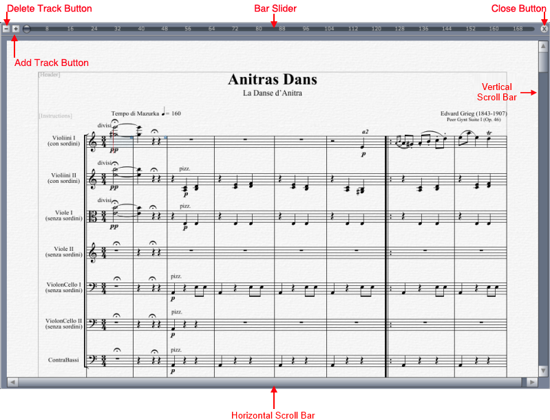
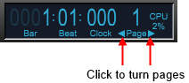
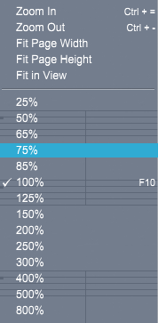
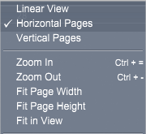

Score View Button
Click the Score View button to switch between Data View and Score View.
The Score View contains controls for navigation your score.

Score View controls
- Bar Slider - Click the Bar Slider and drag to a specific measure. Right click the Bar Slider to jump to a specific place in score.
- Close Button - Click the Close button to close the current score.
- Delete Track Button - Click to delete the current track.
- Add Track Button - Click to insert a new track.
- Horizontal Scroll Bar - Click and drag thumb to scroll horizontally to a position in the view.
Click Bar arrows to incrementally scroll. Click in page area to scroll a view size at a time.
- Vertical Scroll Bar - Click and drag thumb to scroll vertically to a position in the view.
Click Bar arrows to incrementally move position. Click in page area to scroll a view size at a time.
Turning Pages
To move forward or backward through your score a single page at a time, either use Ctrl[cmd]-pgUp or Ctrl[cmd]-pgDn.
Also, when you move you mouse into the Time View, two small page turn arrows appear. Click on these arrows to turn pages one at a time.
"Time View Area"

Turning to a specific page
There are two different methods of turning to a specific page
- Click in the Bar slider mentioned above and drag horizontally until the desired page is displayed in the pop-up indicator.
- Alternately, you can right click in the Time View and select Go to page to type in a specific page number.
When you go to a specific page, the cursor is automatically positioned in the first bar of the page, thus making it the active measure.
Go to a specific bar
There are two different methods of going to a specific page
- Click in the Bar slider mentioned above and drag horizontally until the desired bar is displayed in the pop-up indicator.
- Alternately, you can right click in the Time View and select Go to bar to type in a specific bar number.
When you go to a specific bar, the cursor is automatically positioned in that first bar, thus making it the active measure
Terminology Note:
When the cursor is in a particular measure, that measure is called the active measure. This manual will often ask you to activate a particular measure. This means to place the cursor in a particular measure either by clicking in it, or by using the above methods.
|
Important:
The Bar number in the Time View always shows the absolute bar number in the score; it does not show custom bar numbers assigned in the Set Numbers dialog box (as discussed in “Auto>Set Measure Numbers”). For example, if you set up your score such that the first measure is labeled as Bar #17, the Bar numerical will still show that first measure as Bar #1. However, if your song begins with a pickup measure, the first bar numbers will be Bar #0..
|
Turning to the First Page and Bar
If you use an extended keyboard, you can quickly turn to the first page in a score by pressing Control[cmd]-Home on your computer keyboard. When you press option-Home, the cursor is moved to the first bar in the active track and displays the first page in the Score View.
Turning to the Last Page and Bar
If you use an extended keyboard, you can quickly turn to the last page in a score by pressing Control[cmd]-End on your computer keyboard. The cursor is moved to the last bar in the active track and displays the last page in the Score View.
Zooming
You can zoom in on a score to see tiny details or zoom out to display more of the score. Also, you can size a score to fit completely in the Score window.
- Click the View pop-up menu to see a list of zoom levels.
- Select the desired zoom level from the pop-up menu.
Overture resizes the score based on your selection.

The zoom level options are as follows:
- Zoom In. Select this zoom level to zoom in on the score. When you zoom in, Overture displays all notes and symbols larger than actual size, allowing you to see more detail in a single portion of a score. You can choose this command repeatedly to zoom in closer and closer.
- Zoom Out. Select this zoom level to zoom out on the score. When you zoom out, Overture display all notes and symbols smaller than actual size, allowing you to see more of a score. You can choose this command repeatedly to zoom out further and further.
- Fit Page Width. If you select this zoom level, Overture automatically selects a zoom level that displays an entire page width within the confines of the Score View.
- Fit Page Height. If you select this zoom level, Overture automatically selects a zoom level that displays an entire page height within the confines of the Score View.
- Fit in Window. If you select this zoom level, Overture automatically selects a zoom level that displays an entire page within the confines of the Score View.
- 100%. Select this zoom level to display the score at its normal size.
- 25%-800%. Select one of these zoom levels to set the zoom level to the indicated percentage.
Selective Zooming
Overture lets you zoom in on a specific area of the score. To do so:
- Select the Zoom cursor from the Arrow Selection button by clicking on the small down arrow at the bottom right of button or type ''Z'.
- Drag a rectangle around the area you want to zoom in on.
Overture zooms the selected area to the largest size that will fit within the Score View.
Note: You can quickly return to normal size by pressing the F10 key as shown in the View pop-up menu.
Selecting a Page View Option
The View pop-up menu also contains several viewing options so you can define how Overture displays pages in the Score View.

- Linear View - displays your score as a continuous list of horizontal measures.
- Horizontal Pages - places your pages side by side horizontally across the Score View.
- Vertical Pages - places your pages top to bottom vertically down the Score View.
Scrolling the Score View
There are a few cases where you want to scroll the Score View:
- If the physical page size of your score is larger than your monitor screen and you wish to view the score at full size (100%), you'll need to scroll the Score window to see any portions of a page that don't fit within the view's confines.
- If you view a score at some magnified level (>100%), you'll need to scroll the Score window to see the entire page (even if you have a 1- or 2-page monitor). The most intuitive way to scroll the Score View is to use the standard scroll bars located both to the right and the bottom of the Score View.